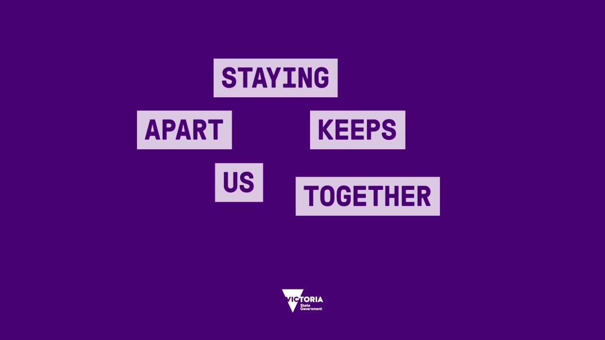

Inspiration
Observations and lived experiences that have inspired this project

Staying Apart Keeps Us Together: This is the first time I encountered a potentially confusing public health campaign during COVID-19.

Social Distancing: potentially confusing use of the word social. Social distancing may be a different meaning to physical distancing (1/3)

Seating at Monash University: students were sitting on the blue stickers placed on seats to indicate they are unavailable (2/3)

Seat unavailable: these are the stickers that were placed on seats in the above image. I observed several students throughout the campus sitting on these stickers. I myself, almost sat on one of these stickers, thinking that it was marked as a place that was 1.5 metres from other stickers but after a closer look, it indicates that the seat is unavailable (3/3)
Putting fun into maintaining physical distance by system to link walking people and spatial distance
Naomi Rathee